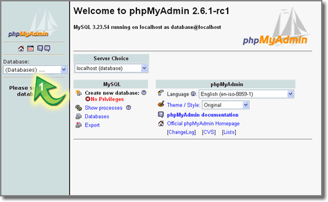
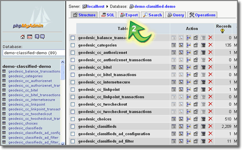
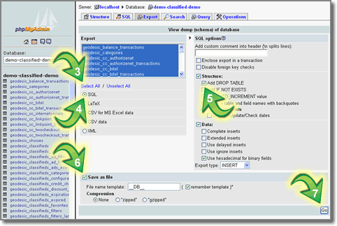

| |
Hosting companies will typically perform database
backups for all of the databases on your server on a daily basis.
Please check with your hosting company's guidelines for details
regarding their database backup procedures. If you would like
to perform your own database backup you can do so by using a
program such as phpMyAdmin. If phpMyAdmin is already installed
on your server (usually accessed through your domain's control
panel) you can perform the steps below to run your own database
backup. If phpMyAdmin is not currently installed on your server,
you can install it yourself by downloading the latest stable
copy from http://www.phpmyadmin.net and following their installation
instructions.
After logging into phpMyAdmin on your server, please follow
the steps below to perform a backup of your database. Each step
is marked with a "green arrow" to help guide you through
this very simple process. |
| |
 |
|
|
|
|
|
| |
| Select the database name you want to
backup from the dropdown list in the left side of your
screen. |
| |
|  |
|
| |
|
|
| |
| When the screen refreshes you will see
a list of tables that are currently present within the
database you just selected. You will also see several
tabs at the top of the screen. Click on the "Export"
tab. |
| |
|  |
|
| |
|
|
| |
| When the screen refreshes, click on
the "Select All" link. All of the tables in
the Export box will then be highlighted. Next, make sure
that the "SQL" radio button is selected. Then,
"check" the "Add DROP TABLE" box so
that your exported tables will contain drop tables (This
is extremely important step.) Next, click the "Save
as file" box and then finally, click on the "Go"
button in the bottom right corner of the screen. You will
then see a popup box asking you where you want to save
your database tables. Simply select a location and click
"Save". You will now have a complete backup
file of your database's tables in an SQL format. Essentially,
what you have created is a "snapshot" of your
database at that given time to be rerun at a later time
if needed. That's all there is to it. Congratulations...you
have just backed up your database. |
| |
|  |
|
| |
| |
|